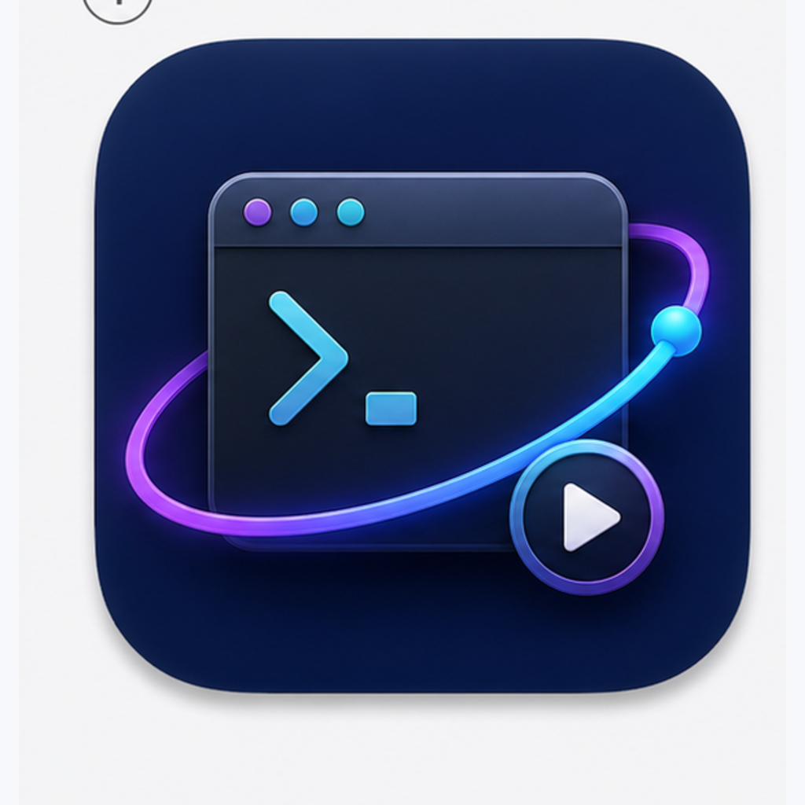
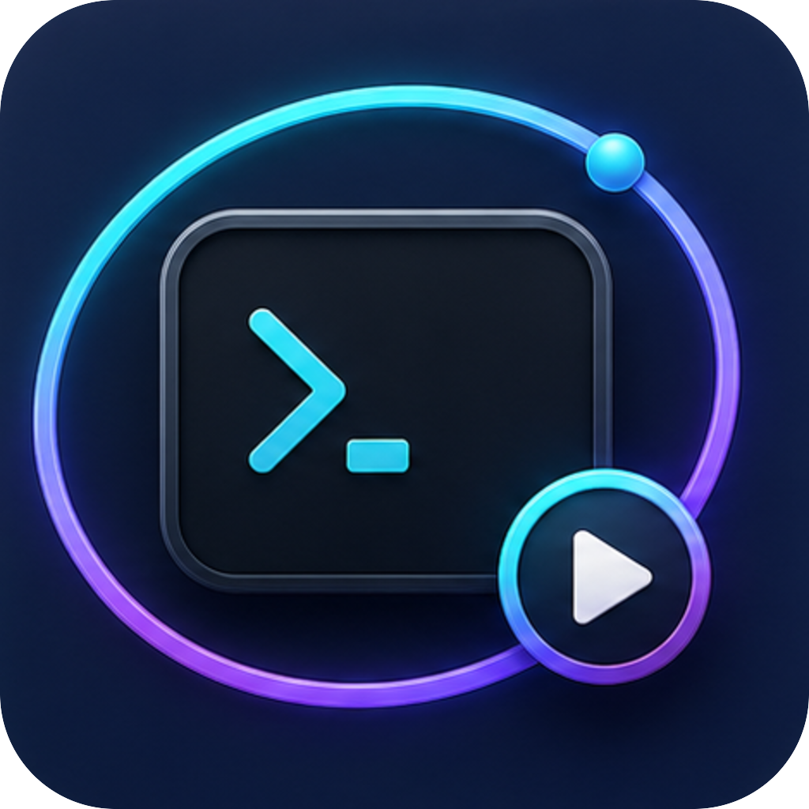
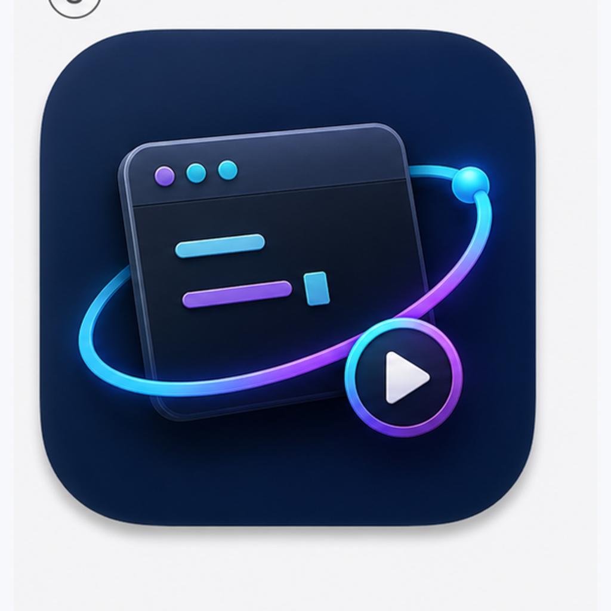

1. Terminal Orbit Play
터미널 · 실행 · 오빗
3번의 실행 버튼과 오빗 구성을 가장 직접적으로 유지하는 방향입니다.

2. CLI Prompt Ring SELECTED
선택됨 · CLI 프롬프트 · 반복
터미널 프롬프트 느낌을 더 강하게 주되, 텍스트 없이 추상 도형으로만 처리합니다.

3. Console Tile Automation
콘솔 · 자동화 · 로그
콘솔 패널과 실행 궤도를 결합해 자동화 앱 느낌을 가장 균형 있게 잡는 방향입니다.